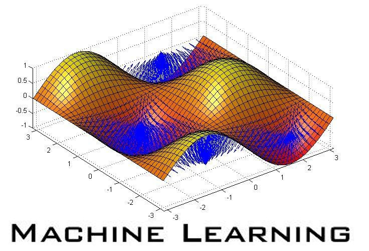
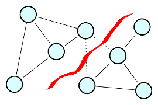
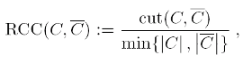
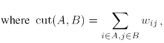

|
1-Spectral Clustering by Matthias Hein and Thomas Bühler |
 |
Cheeger cut minimization and 1-Spectral Clustering
Spectral clustering is a graph-based clustering method based on a
relaxation of
the NP-hard problem of finding the optimal balanced cut of an undirected
weighted graph where the weights represent the similiarities between
points.
In [2] we proposed p-spectral clustering, a generalization of spectral clustering based on the second eigenvector of the nonlinear graph p-Laplacian
(the graph Laplacian is recovered for p=2). One can show that for p
approaching 1 the cut found by thresholding the second eigenvector
converges to the optimal Cheeger cut, and indeed one obtains much better
cuts, at the expense of higher runtime. In [1] we considered directly the case p=1 and showed that the second eigenvalue of the graph 1-Laplacian is equal to the optimal Cheeger cut.
Our nonlinear inverse power method can be applied to efficiently compute nonconstant nonlinear eigenvectors of the graph 1-Lapacian and the resulting 1-spectral clustering. An implementation can be downloaded from this website.

|
The balanced cut criteria to be optimized are the Ratio Cheeger cut (RCC), defined
for a partition (C,C) where C=V \ C as

or the Normalized Cheeger cut (NCC), where the cardinalities of the clusters are replaced by the sums of degrees.
The standard spectral relaxation has as its solution the second eigenvector of the graph Laplacian and the final partition is found by optimal thresholding. |
Our nonlinear inverse power method can be applied to efficiently compute nonconstant nonlinear eigenvectors of the graph 1-Lapacian and the resulting 1-spectral clustering. An implementation can be downloaded from this website.
Download and License
1-Spectral Clustering has been developed by Matthias Hein and Thomas Bühler,
Department of Computer Science, Saarland University, Germany. The code
for 1-Spectral Clustering is published as free software under the terms
of the GNU GPL v3.0. Please include a reference to the paper An inverse power method for nonlinear eigenproblems with applications in 1-spectral clustering and sparse PCA and include the original documentation and copyright notice.
Download 1SpectralClustering (Version: 1.1) Version history
References
[1] M. Hein and T. Bühler,
An inverse power method for nonlinear eigenproblems with applications in 1-spectral clustering and sparse PCA,
In Advances in Neural Information Processing Systems 23 (NIPS 2010), accepted. PDF (Supplementary material: PDF)
[2] T. Bühler, M. Hein,
Spectral Clustering based on the graph p-Laplacian,
In Leon Bottou and Michael Littman, editors, Proceedings of the 26th International Conference on Machine Learning (ICML 2009), 81-88, Omnipress, 2009, PDF (Supplementary material: PDF - Errata of Supp. Mat.: PDF)
Documentation
To run 1-Spectral Clustering, download the file
OneSpectralClustering.rar and unrar it in some convenient directory. Add
this directory to the Matlab path variable. The clustering can then be
computed by the function
'OneSpectralClustering'. If you find bugs or have other comments contact
Thomas Bühler or Matthias Hein.
Usage, fast version:
Usage, slower version, but improved partitioning (recommended):
Input:
[clusters,cuts,cheegers] =
OneSpectralClustering(W,criterion,k);
OneSpectralClustering(W,criterion,k);
Usage, slower version, but improved partitioning (recommended):
[clusters,cuts,cheegers] =
OneSpectralClustering(W,criterion,k,numOuter,numInner);
[clusters,cuts,cheegers] =
OneSpectralClustering(W,criterion,k,numOuter,numInner,verbosity);
OneSpectralClustering(W,criterion,k,numOuter,numInner);
[clusters,cuts,cheegers] =
OneSpectralClustering(W,criterion,k,numOuter,numInner,verbosity);
Input:
W: Sparse weight matrix. Has to be symmetric.
criterion: The multipartition criterion to be optimized. Available choices are
'ncut' - Normalized Cut,
'ncc' - Normalized Cheeger Cut,
'rcut' - Ratio Cut,
'rcc' - Ratio Cheeger Cut
k: number of clusters
If no additional parameters are specified, the multipartitioning scheme is performed once, where each subpartitioning problem is initialized with the second eigenvector of the standard graph Laplacian (fast version).
The quality of the obtained partitioning can be improved by performing additional runs of the multipartitioning scheme (parameter numOuter) with multiple random initializations at each level (parameter numInner).
Input(optional):
criterion: The multipartition criterion to be optimized. Available choices are
'ncut' - Normalized Cut,
'ncc' - Normalized Cheeger Cut,
'rcut' - Ratio Cut,
'rcc' - Ratio Cheeger Cut
k: number of clusters
If no additional parameters are specified, the multipartitioning scheme is performed once, where each subpartitioning problem is initialized with the second eigenvector of the standard graph Laplacian (fast version).
The quality of the obtained partitioning can be improved by performing additional runs of the multipartitioning scheme (parameter numOuter) with multiple random initializations at each level (parameter numInner).
numOuter: number of additional times the multipartitioning scheme is
performed (default is 0);
numInner: for the additional runs of the multipartitioning scheme: number of random initializations at each level (default is 0).
verbosity: Controls how much information is displayed. Levels 0-3, default is 2.
Output:
numInner: for the additional runs of the multipartitioning scheme: number of random initializations at each level (default is 0).
verbosity: Controls how much information is displayed. Levels 0-3, default is 2.
clusters: mx(k-1) matrix containing in each column the computed
clustering for each partitioning step.
cuts: (k-1)x1 vector containing the Ratio/Normalized Cut values after each partitioning step.
cheegers: (k-1)x1 vector containing the Ratio/Normalized Cheeger Cut values after each partitioning step.
The final clustering is obtained via clusters(:,end), the corresponding cut/cheeger values via cuts(end), cheegers(end).
If more flexibility is desired, call the subroutine computeMultiPartitioning directly.
cuts: (k-1)x1 vector containing the Ratio/Normalized Cut values after each partitioning step.
cheegers: (k-1)x1 vector containing the Ratio/Normalized Cheeger Cut values after each partitioning step.
The final clustering is obtained via clusters(:,end), the corresponding cut/cheeger values via cuts(end), cheegers(end).
If more flexibility is desired, call the subroutine computeMultiPartitioning directly.